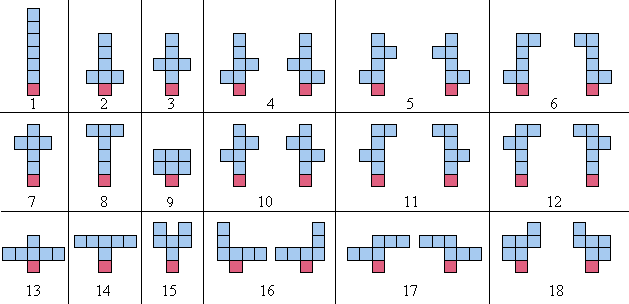

Let us define a balanced sculpture of order $n$ as follows:
When counting the sculptures, any arrangements which are simply reflections about the $y$-axis, are not counted as distinct. For example, the $18$ balanced sculptures of order $6$ are shown below; note that each pair of mirror images (about the $y$-axis) is counted as one sculpture:

There are $964$ balanced sculptures of order $10$ and $360505$ of order $15$.
How many balanced sculptures are there of order $18$?